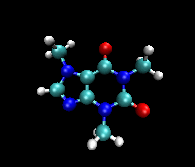

Molecular Properties Prediction

Overview
The goal of this assignment is to explore the use of deep learning, and in particular Graph Neural Networks (GNNs), for molecular property prediction. While traditional cheminformatics has relied on handcrafted features like molecular fingerprints, recent advances in graph-based learning allow us to learn directly from the molecular graph structure. This assignment challenges you to understand both paradigms, classical feature engineering and deep graph representation learning, and critically compare their strengths and limitations.
You will work with the Tox21 dataset , which consists of thousands of molecules labeled for activity against 12 different toxicity-related biological targets. Your task is to build and evaluate both traditional machine learning models and modern GNN-based approaches to predict molecular activity.
Dataset: Tox21
The Tox21 dataset (available on CANVAS) is a benchmark in computational toxicology. It includes:
- Compounds represented as SMILES strings
- 12 binary classification tasks (e.g., activation of nuclear receptors or stress pathways)
- ~8,000 molecules for training/testing
- Multi-label setup (a molecule can be active in multiple assays)
The dataset has been preprocessed and split into training, validation, and test sets.
Molecular Representations
SMILES (Simplified Molecular-Input Line-Entry System)
SMILES is a textual representation of chemical structures, where atoms and bonds are encoded as ASCII strings (e.g., CC(=O)Oc1ccccc1C(=O)O for aspirin). While convenient for storage and parsing, SMILES must be converted to structured formats (e.g., molecular graphs) to be usable for learning, or features need to be extracted for classical ML.
From SMILES to Graphs
You can use cheminformatics libraries like RDKit to convert a SMILES string into a molecular graph, where:
- Nodes = atoms (with features like element, degree, charge)
- Edges = bonds (with features like bond type)
Modeling with GNNs
GNNs operate directly on molecular graphs by passing messages between atoms, aggregating neighborhood information, and learning rich, hierarchical molecular representations. In this assignment, you may explore architectures such as:
- Graph Convolutional Networks (GCNs)
- Message Passing Neural Networks (MPNNs)
- AttentiveFP or D-MPNN (ChemProp)
You do not have to analyse all of these architectures: choose one or two that you find interesting and implement them. These models typically include:
- Atom/bond featurization
- Message passing layers
- A readout/pooling step to produce a fixed-size molecular embedding
- A final MLP for classification
You may use any high-level libraries of your choice to implement GNNs. You can also use existing implementations of the models you choose. The purpose of this assignment is not to implement the models from scratch, but to understand how GNNs work, how to train them and leverage them for molecular property prediction.
Assignment Tasks
Part 1: Classical ML Baseline with Molecular Fingerprints
- Use RDKit to compute ECFP4 (Extended Connectivity Fingerprints) for all molecules: these are features that characterize the local environment of each atom in the molecule. ECFP4 is a widely used fingerprint for molecular similarity and property prediction. You are free to also explore other types of fingerprints/features (e.g., MACCS keys, Morgan fingerprints) if you wish. For this, do not hesitate to read the literature and/or brainstorm with a LLM-assistant.
- Train Random Forest or Gradient Boosting classifiers (e.g., XGBoost) using these fingerprints.
- Report performance on all 12 targets.
This will serve as a baseline for comparison with GNNs. You may also explore other classical models (e.g., SVM, logistic regression) or additional features (e.g., molecular descriptors) if you wish.
Part 2: Graph Neural Network Modeling
- Convert each SMILES string into a molecular graph.
- Build a GNN model using any of the recommended architectures.
- Train and evaluate on the same prediction tasks and metrics.
If time permits:
- combine GNNs with some of the classical features you have explored in Part 1.
- compare to RNNs (eg. LSTM, biLSTM, 1D-CNN) that operate on the SMILES strings directly.
Evaluation Metric
Use Area Under the ROC Curve (AUC ROC) for each of the 12 targets, and report: - Individual AUC scores - Mean and median AUC across tasks
Deliverables
You must submit the following:
- A written report (PDF)
- A report of at most 10 pages; shorter is better if concise
- Clearly describe your methodology, experiments, results, and findings
- Include key plots or tables where relevant (e.g., ROC curves, performance comparisons)
- Do not include code in the report
- Code
- Submit as a GitHub repo or zip file
- Should include all scripts/notebooks for data loading, feature generation, model training, and evaluation
- Make your code clean and reproducible
- Submit as a GitHub repo or zip file
Why This Matters in Practice
Drug discovery increasingly depends on accurate, data-driven prediction of molecular properties. While traditional cheminformatics models still play a role, deep learning, especially GNNs, offers a powerful way to move beyond hand-designed descriptors.